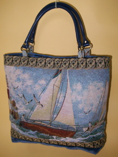
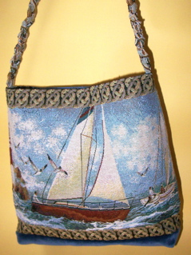
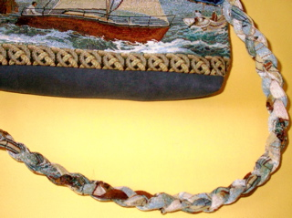
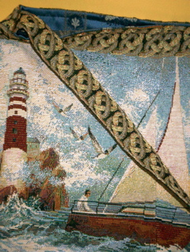
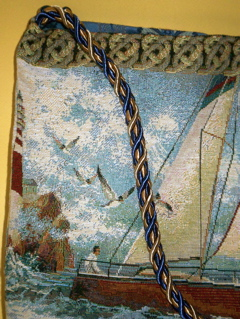

|

#108 Sail away with this fun tapestry purse. Navy blue faux leather handles complete the look. |

#109 This sailboat bag has sturdy braided handle. |
|

#109 Closeup of the braided handle. |

This version has a self-strap made of the knot motif. |
|

#110 Gorgeous satin cording in navy blue and gold complete the nautical look. Anchors aweigh!! |